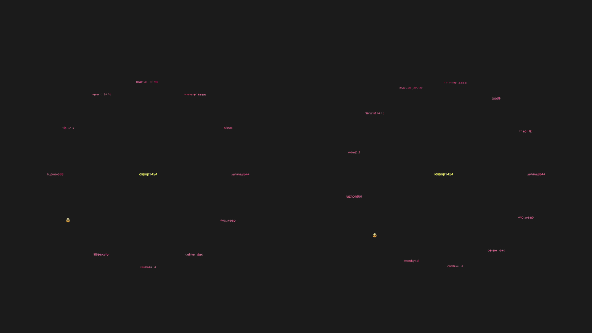
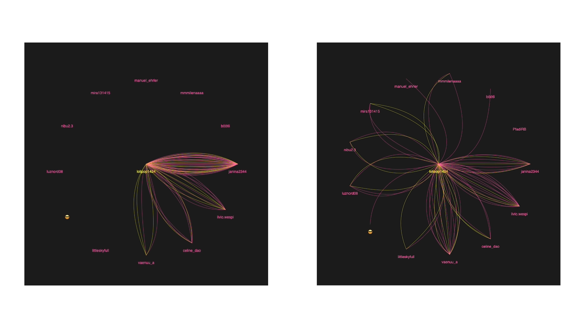
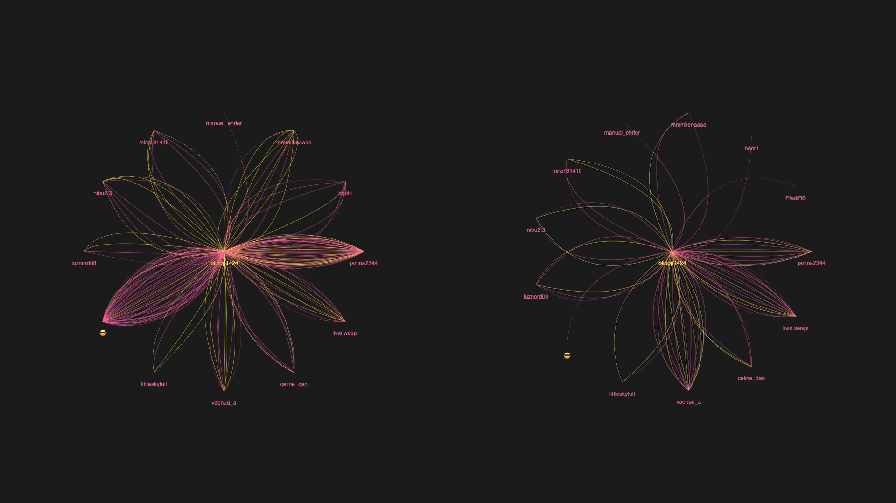
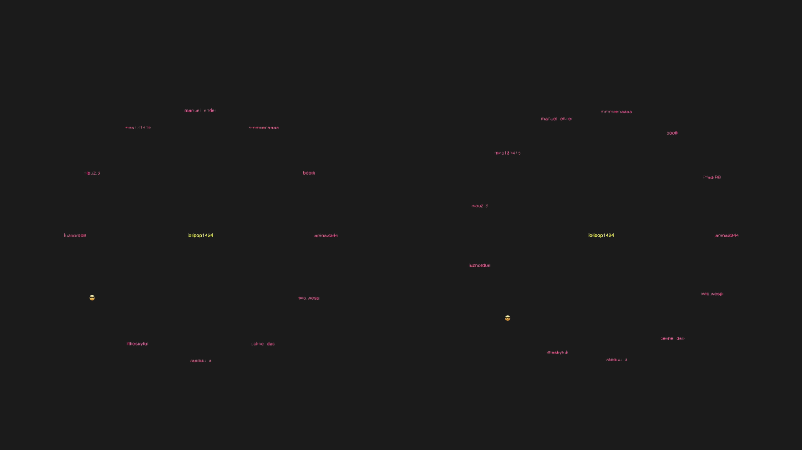
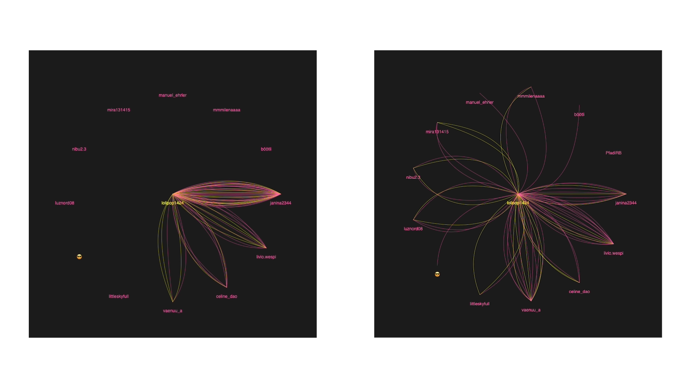
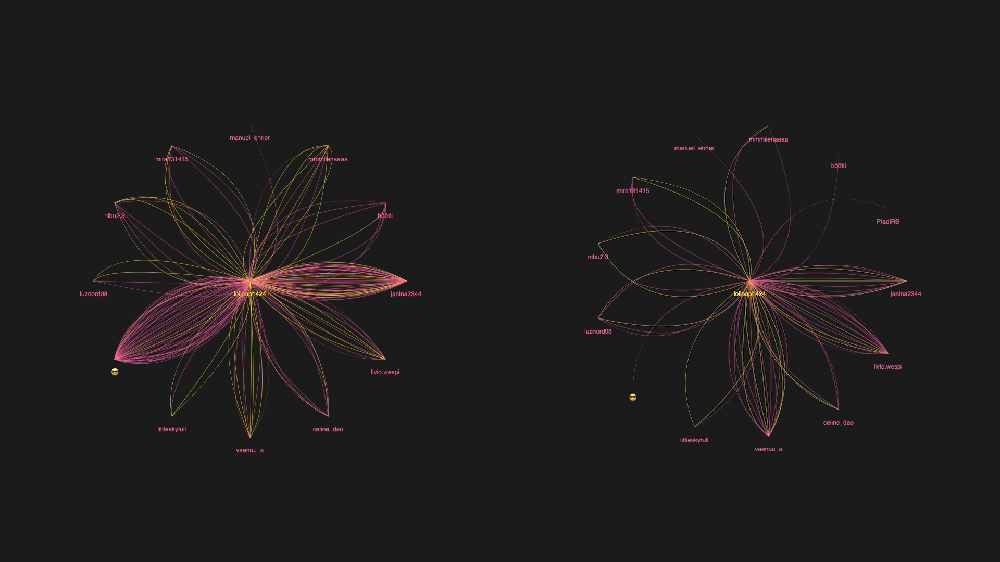

Ich habe zwei Visualisierungen (21.–22.11. und 23.–24.11.2024) erstellt, die Snaps zwischen mir und meinen Kontakten zeigen. Probleme mit großen Datenmengen habe ich durch ein gefiltertes JSON-File gelöst.


 




